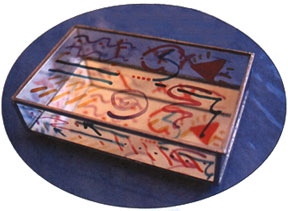
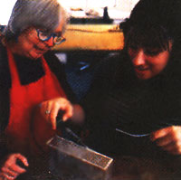
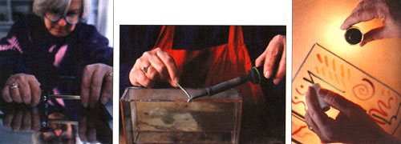
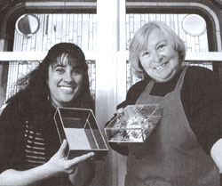

Handworks
Deana Blanchard describes how to create a simple yet beautiful mirrored box.
After ambling through Deana Blanchard's stained-glass studio, it's hard to believe she never intended to be an artist. Her studio, located in the back of her house, is packed with intricate stained-glass boxes, decorative wall panels, and more than a dozen craft show awards.
"I have no art background at all," Deana says, smiling. "I didn't even start making glass pieces until I was 32 years old, and I never thought I'd have the skills to actually sell my items:'
I felt better after hearing this since this would be my first time working with stained glass. The introductory book I skimmed through left me more than a bit intimidated. The first chapter alone spoke of cutting through glass panes, investing in specialized equipment, and manipulating a hot soldering iron. In fact, I probably would have foregone the whole experience were it not for this lesson and interview. I admitted my reser vations right away, but Deana assured me there was nothing to worry about.
"Like everything else," she says, "working with stained glass just comes down to practice. The best thing newcomers can do is grab some free panes of glass at the lumberyard and practice making cuts before making their first projects. Remember, there's no fudging when it comes to cutting. Your measurements must be exact. Also, many craft persons refer to first projects as `frisbees,' because they are usually so bad they get tossed. Expect it"
As for your work area, Deana suggests setting up a table in an area not highly traf ficked, perhaps your basement or garage. Avoid using the kitchen table, which is often messy and dangerous if shards get left behind. The table she uses is covered by a large peg board, and the holes in it help Deana make sure that her score (cutting) lines are perfectly straight. Nailing a 1" x 4" plank to the lefthand side of the table allows her to rest glass pieces against it, further ensuring straight lines and perpendicular angles.
Other than that, it's just a matter of getting the right tools, being careful as you work, experimenting, and having fun. And after 15 years, Deana's eyes still sparkle as she works.
"Everybody has a medium of expression," adds Deana. "And once you figure out what it is, your life will be all the richer for it:"
This 8" x 5" box, named after Selena, goddess of the moon, is made with a mirror bottom, which brings light into the box and reflects it back out. The technique used, called copper foiling, is a good one for beginners to start with. First-timers should plan to invest approximately three to four hours. It's best to start with plain glass, which you can usually scrounge for free, and advance to the more expensive stained glass once you feel comfortable with the technique.
-glass window pane, double strength (available for free at lumber yard)
-glass mirror pane, double strength (also free at lumberyard)
-strip cutter (available for $30 at hobby shops)
-7/32 copper foil (available at hobby shops for under $5)
-5/16 copper foil, for lid only (available at hobby shops for under $5)
-solder, 50% tin-50% lead (available at hardware stores for approximately $5)
-soldering iron (80 watt available for $40-$50; or 100 watt available for $90)
-spray bottle of flux (mildly acidic, nontoxic solution available at hardware stores for less than $5)
-brass tube with 3/16" diameter and brass rod 1/16" diameter (available at hardware store for under $1)
-small hacksaw or handsaw
-pliers
-steel wool pad, detergent, sponge
-felt or bump-ons and glue
-enamel paints (fingernail polish works great)
-fingernail polish remover or paint thinner
For box top: Place the glass pane on your working table so that the left edge is lined up against your 1" x 4" plank. Then, take your strip cutter and set it to five inches. Holding it between your index and middle finger, pull the cutter over the glass, towards you. The deep scratch you just made is called a score line. Next, separate the glass into two pieces by holding the pane with the score line between your thumbs. With your index fingers just beneath the glass, snap the piece in two. Set your strip cutter to eight inches, and cut the same piece of glass to an 8" length. You've got your box top.
For box bottom: Repeat the exact process above, using your mirror pane.
To make sides: Cut two 7 3/4" x 1 3/4" strips and two 5" x 1 3/4" strips.
Pick up your roll of copper foil with 7/32" width, and peel back a few inches of the adhesive. Stick the foil to one of your side pieces starting at the center of the short edge (1 3/4"), and wrap the foil around the edges of the rest of the glass. If you keep a little tension as you are wrapping, it will stick better. When you are done, go back and crimp down the sides of the foil with your thumb, making sure the corners are lying flat. Repeat with all of the glass sides. For the lid and mirror bottom, however, switch over to your 5/16' thick foil, and start foiling in the middle of your 8" side.
MORE THAN A HOBBY
"Finding your own medium of expression is one of the best ways to make life richer."
Using your spray bottle of flux, coat all of the glass with the wet solution. For the mirror, coat only the back side. Then, holding the mirror (box bottom) so that the mirror is facing you on its 5" side, hold one of the 5" x 1 X" pieces on top of it, so that the two 5" edges are perpendicular to one another. Now touch your soldering iron to the solder, getting a small glob on it, and then press it to the seam you just created, making a small dot of solder. Do this a few more times along the seam so that the two glass pieces are bonded. Then run the iron along the seam you just created over the foil.
Rotate the mirror to its 8" side, and hold one of the 3/4" x 1 3/4" pieces on top of it so that the 8" side is perpendicular with the 7 3/4" side (in an L-shape). Solder this new seam according to the instructions above. Solder the other 7 3/4" piece onto your box, and then solder the bottom on. The last side you solder should be the 5" one.
Next, solder all of the seams again, this time for cosmetic reasons. They should be smooth and slightly rounded. Let each seam set for eight seconds before moving on to the next one, and be careful not to leave the iron on the glass for more than 30 seconds or it may crack. If you accidentally get solder on the glass, spray a bit of flux on the spot and wipe it off with your nail. You can lightly solder a thin coating along the top edge of the box, which is not really a seam.
Cut your brass tube using a small handsaw so that it is 7 1/2" long. Flux the tube heavily and place along the 8" side of the box top, where the foil overlap is. Solder the tube to the lid. Do not let any solder get into the ends of the brass tube. Run the iron along the underside of the tube so that it is smooth.
Now cut your brass rod into two 1 1/2" pieces, using a small handsaw. With pliers, bend each piece in the center to make a right angle. Each side of the angle should be 3/4". If the sides are too long, trim them with your metal cutter. Then flux the pieces well.
Place your lid on top of your box and then put one end of each rod into the ends of the brass tube. Tack solder onto the exposed half of the rod and onto the seams of the back sides as well.
Place the box on its side so that the new hinges are facing the ceiling and go over the rods again with solder. Hold the lid tightly as you are soldering.
Wash the whole box, inside and out, in the sink. Using a steel wool soap pad, scour off any black flux tarnish on the seams. Be gentler on the tinned edges (the top edge of the sides and lid). Then clean the whole box with a sponge and dishwashing detergent. Again, be careful with the lid.
Place newspaper down on your table, and set the box on top of it. Now it's pretty much up to you, although Deana suggests painting the inside of the lid for an interesting look. If you feel nervous about painting with no plan, cut a piece of paper the same size as your lid and draw a pattern on it. You can hold it on top of the lid as you are painting the other inside. If you make a mistake, just wipe the paint off with a bit of fingernail polish remover or thinner on a piece of cotton or tissue.
Glue an 8" x 5" piece of felt onto the bottom of your box so it will not scratch the surface of a table or shelf. Or you can buy "bump-ons" at a framing store (small, clear knobs used to protect walls from picture frames). Glue one in each corner.
Editor's Note: Deana Blanchard and her husband, Chuck Young, own Selena Stained Glass in Boulder, CO.
|
 Left: Deana begins scoring the glass for the box top. Middle: The box seams need to be soldered twice to ensure that they are smooth and slightly rounded. Right: Paint the inside of the lid for an interesting look. |
 Michelle and Deana proudly display the fruits of a day's effort. |
 |
|
 |
|
|